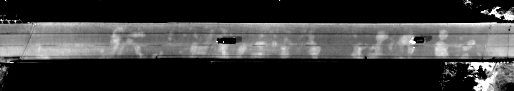

UAV FOR BRIDGE DECKS
UNMANNED AERIAL VEHICLES SURVEYS

Unmanned Aerial Vehicles, known more commonly as drones, are now being used to collect visual and infrared data of bridge decks. A wide array of UAVs is now readily available, from consumer-level drones with fully integrated cameras to larger machines designed for heavier payloads and more sophisticated custom camera systems.
WHY USE UAV?
Collecting infrared and visual imagery from above the decks offers several advantages, including:
- Safer data collection with absolutely no disruption to traffic or need for closures
- More efficient data collection so that more decks can be collected in a single day, or more passes can be collected at varying times of the day for highly detailed analyses
- Total coverage of bridge deck, including portions not accessible by vehicle (for example, difficult or dangerous merge areas, shoulders, or sidewalks)
- Better field of view for infrared thermography, requiring less manipulation for analysis
- Use as a high-level screening tool to target bridges for more detailed inspection
DELIVERABLES
Deliverables are similar to those of the high-speed vehicle-based surveys - a comprehensive NDE inspection report with deck conditions mapped and quantified. Results can include:
- Plan-view condition maps showing subsurface and surface defects
- CADD-compatible versions of condition maps
- Quantities provided by span, lane, or both
EQUIPMENT
The appropriate UAV setup depends mostly on the required level of detail for a particular aerial survey - more sophisticated setups equipped with higher resolution (and heavier) visual and infrared cameras can provide mappable data for detailed condition maps. Less expensive consumer-level machines can still provide visual and even infrared data, but the camera resolutions and sensitivities are reduced in order to save weight. This data may provide a broad sense of the deck condition, but likely would not be as appropriate for mapping defects and planning repairs.
While UAV bridge surveys are an exciting new possibility, there are still many unknowns surrounding this application of new technology. The use of drones, especially near highly trafficked highways and roads, could present some danger to the UAV operator and drivers. Additionally, permits and licenses are often required to use UAVs for applications such as bridge deck testing
High quality infrared data, as pictured here, can also be collected via fixed-wing aircraft
Fixed-wing aircraft provide another option for aerial bridge deck condition surveys. These surveys are conducted at a much higher altitude, typically around 1000 feet above the deck surface. However, much larger and more sophisticated camera setups can be integrated into the fixed-wing aircraft in order to collect high resolution, high-quality data, such as the example shown above. Additionally, these fixed-wing surveys can cover vast areas in the same time it would take a UAV to survey a single deck. Fixed-wing surveys are particularly useful for corridor studies where hundreds of bridges could be surveyed in a single flight, and the data can be used as a filtering tool to identify the bridges most in need of rehabilitation while still providing an adequate level of detail for mapping delaminations and patches. Studies have recently compared fixed-wing aerial infrared surveys to more traditional vehicle-based infrared surveys, with results that demonstrate the usefulness of these aerial surveys.
LEARN MORE ABOUT AERIAL INFRARED SURVEYS OF BRIDGE DECKSInfrasense.com